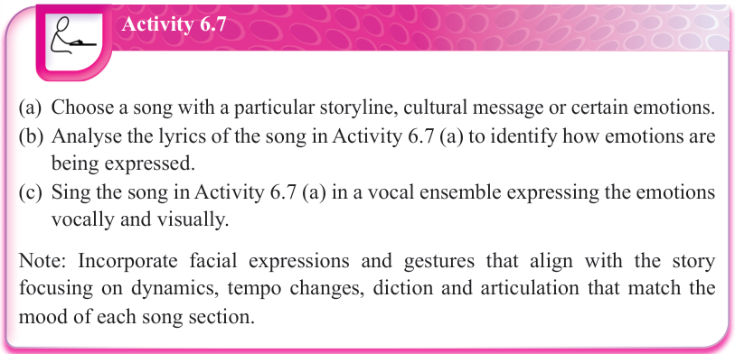
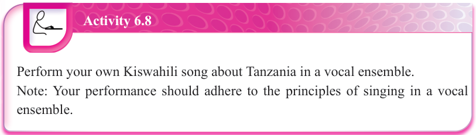
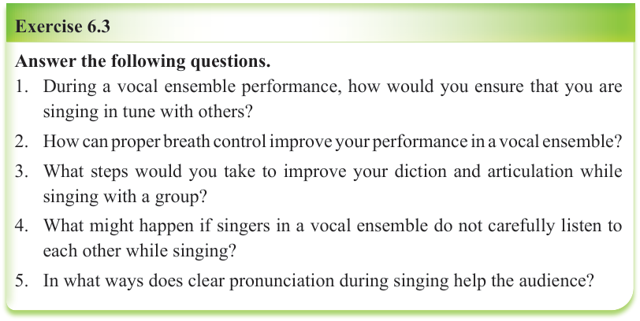

Activity 6.7
(a) Choose a song with a particular storyline, cultural message or certain emotions.
(b) Analyse the lyrics of the song in Activity 6.7 (a) to identify how emotions are being expressed.
(c) Sing the song in Activity 6.7 (a) in a vocal ensemble expressing the emotions vocally and visually.

Activity 6.8
Perform your own Kiswahili song about Tanzania in a vocal ensemble.

Exercise 6.3
Answer the following questions.
1. During a vocal ensemble performance, how would you ensure that you are singing in tune with others?
2. How can proper breath control improve your performance in a vocal ensemble?
3. What steps would you take to improve your diction and articulation while singing with a group?
4. What might happen if singers in a vocal ensemble do not carefully listen to each other while singing?
5. In what ways does clear pronunciation during singing help the audience?
Vocal-instrumental ensemble
Singers and instrumentalists create an exciting and powerful musical experience through vocal-instrumental ensemble performances.
These performances can be small, like a few singers with a piano, or large, like a choir with multiple musical